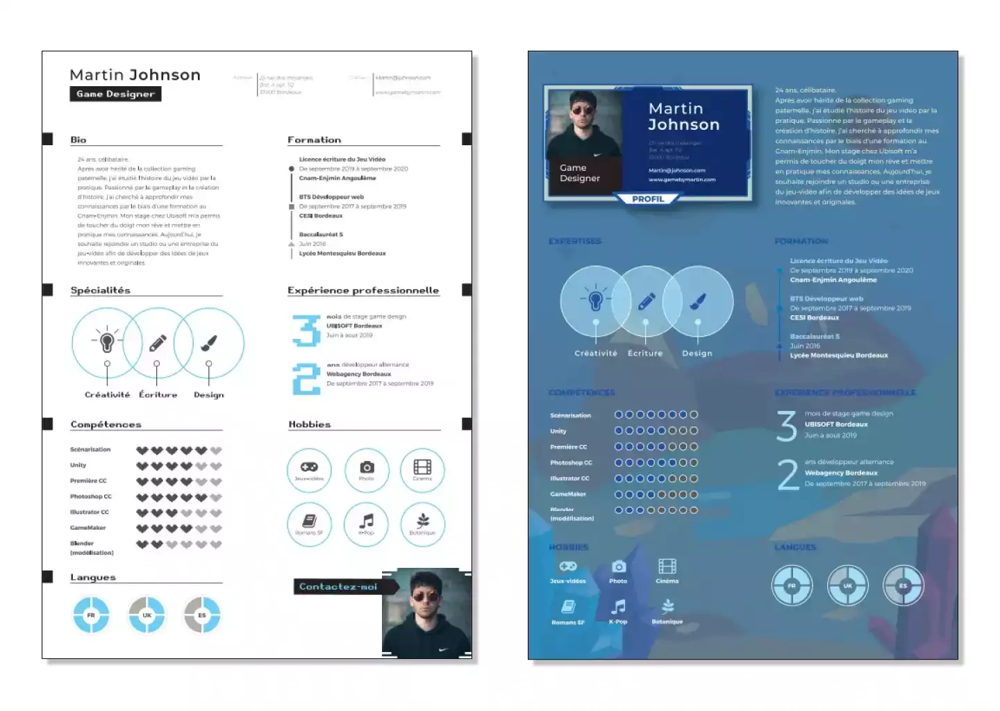
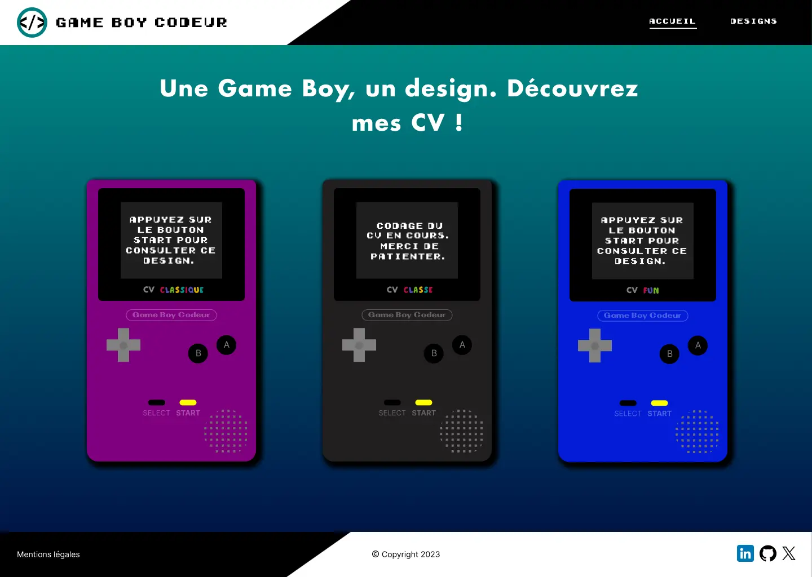

Candidature de game designer
Contexte


Lien vers le site :
Candidature Game boy codeur
Martin Johnson, game designer, souhaite postuler dans les métiers du jeu vidéo. Pour accroitre sa visibilité, il aimerait adapter ses deux designs de CV à un format web. Ces derniers devront être consultables sur ordinateur, tablette et mobile. Il attend également que soient apportées interactivité et animation à ses CV, tout en conservant une bonne performance web. Enfin, Martin Johnson aimerait qu'une page de présentation de sa candidature permette au recruteur de consulter ses deux designs de CV.
Processus
- Création des maquettes ordinateur et téléphone des CV
- Création de la charte graphique
- Création de la maquette de la page de présentation
- Intégration des CV et de la page de présentation
Création des maquettes des 2 CV
Les CV suivants ont été transmis en format .pdf pour maquettage et intégration :
Création de la charte graphique et de la page de présentation
Le choix de la charte graphique reflète la volonté de rendre perceptible l'intérêt de Martin Johnson pour le milieu du jeu vidéo dès la page d'accueil, avec des polices originaires de ce milieu.
De même pour la page de présentation, qui permettra au recruteur de naviguer d'un CV à l'autre en cliquant sur la game boy de son choix.
Maquettage sous figma
Les maquettes ont été réalisées pour les supports suivants :
- ordinateur de résolution 1440 x 1024,
- mobile de résolution 375 x 667.
L'ensemble de la candidature (page de présentation et CV), grâce à son responsive design, pourra être consultée par le recruteur sur ordinateur, tablette et mobile.
Vous trouverez ci-dessous les visuels des deux maquettes, sur un format ordinateur et sur un format téléphone.
Les maquettes sont également consultables en cliquant ici.